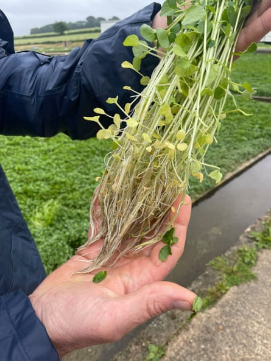
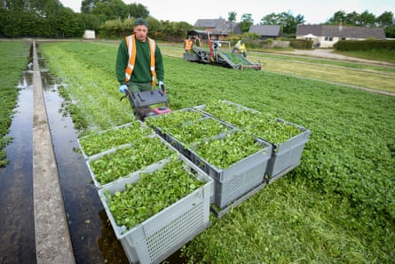

“The idea came from an Instagram video,” says Tom Amery, looking admiringly at one of three huge drones he has bought to help grow watercress on a Hampshire farm.
The drone boasts four sets of rotary blades and is able to carry up to 50kg of fertiliser, seed or feed for spreading or spraying, and is the product of several years of meticulous research by Amery, often using the unlikely corners of social media dedicated to agricultural technology.
Amery and The Watercress Company, where he is managing director, are among the food producers attempting to embrace cutting-edge tech in one of the world’s oldest professions to help speed up processes and boost production in the face of extreme weather . It’s a challenge the government appears alive to, with agri-tech included in its industrial strategy earlier this month.
The company has invested £80,000 in the Agras T50 drones, made by the Chinese company DJI and designed for agricultural use.
Distributing potash or phosphate by drone rather than by hand will be “two to three times faster than walking”, Amery says. This will mean it can be applied in a more targeted way, reducing the amount of fertiliser needed for the crop, which ends up in the 25m bags of salad it sells each year through the UK’s largest supermarkets.
Despite the long-running discussion over whether machines will replace humans in agricultural jobs, Amery said the investment would boost morale. “It’s about staff retention, taking out an unfavourable part of the job,” he adds. “We will pay the operators more. With more pay, staff are more likely to stay.”
While such drones are already in use on farms in North and South America, as documented in detail on social media, they remain a novelty in the UK. The Watercress Company’s drones are currently grounded, as the business awaits the permits required by the aviation watchdog, the Civil Aviation Authority.
However, Amery hopes they will soon be fitted with hoppers and whizzing above the watercress beds across the grower’s 20 hectares of land, spread across 12 Hampshire and Dorset farms. The route for each field can be programmed in advance, while 20-year-old employee George Mathews has been trained up and has obtained a licence to pilot the drones.
Even though The Watercress Company follows growing methods largely unchanged since Victorian times – when the leaves first gained popularity in the UK as a source of nutrition, especially for the urban poor – it is no stranger to technology.
Today’s crop is still grown in watercress beds fed by natural streams that have been in use since the 1880s, although the leaves are now cut every other day between May and October using a bespoke harvester.
The crop.Photograph: Joanna Partridge/The Guardian
The grower is also trialling multispectral cameras, which are able to capture images in various spectral bands – or ranges of wavelengths – far beyond what the human eye can see. The images can produce a “heatmap” of the fields, which are analysed by AI to assess the location of any crop problems.
The Watercress Company is pursuing the kind of innovation the National Farmers’ Union (NFU) wants to see adopted by more UK farms, as food producers look to work in a more efficient and more sustainable way.
However, at a time when many farmers are feeling the financial squeeze , the NFU believes that few will have the money, or confidence, to invest in new and potentially untested technology.
This is also essential to improve productivity in the farming sector, the NFU says, warning that without it, the UK risks slipping further behind its international competitors.
“Driving forward productivity to build domestic food production should be on every government’s list,” says Tom Bradshaw, the president of the NFU. “Among our European neighbours there is evidence that we are falling behind and are not as productive in some areas.”
In the industrial strategy, agri-tech, along with precision breeding, has been included as areas of focus within the growth sector plan and the NFU believes this will help farming businesses to “become more productive, sustainable and resilient”.
The government’s farming innovation programme has been allocated £200m up to 2030, which the Department for Environment, Food and Rural Affairs (Defra) said would offer “targeted funding to drive innovation in agriculture”.
“Driving innovation and growth in agri-tech is a win-win for the nation,” says the farming minister, Daniel Zeichner. “Not only can we create jobs, strengthen economic resilience and ensure food security is maintained, we can boost the profits of farmers and growers through innovation.”
However, the announcement came just days after the farming budget in England was cut by £100m a year in the government’s spending review , which reduced Defra’s day-to-day spending budget by 2.7%, although this was cautiously welcomed by the NFU and farming groups, who had feared greater cuts.
Back in Hampshire, The Watercress Company is not convinced that it will benefit from the money allocated for the farming innovation programme.
“Lots of this funding is often driven by high-level innovation, and often lots of that doesn’t make it to the farm gate or doesn’t result in increased levels of production and productivity,” says Amery.
“You can end up putting a huge amount of investment into technology not proven to provide results.”
The crop is cut at The Watercress Company in Dorset.Photograph: Finnbarr Webster/Getty
Up to now, the grower has carried the cost of almost all of its innovation itself. It was able to secure £20,000 of funding, representing around a quarter of its drone investment, from the government’s shared prosperity fund, through its local council.
However, Amery says the business is rarely able to access funding such as R&D tax credits, which are only available to companies which are required to pay corporation tax. Partnerships, like The Watercress Company and many others in the farming sector, as well as sole traders, do not pay corporation and are therefore ineligible.
This has not put the grower off seeking out the latest gadgets to improve his crop. “Innovation is usually driven by a desire to overcome a problem,” says Amery. “I think we get one major innovation every five to 10 years, one that is a game-changer.”